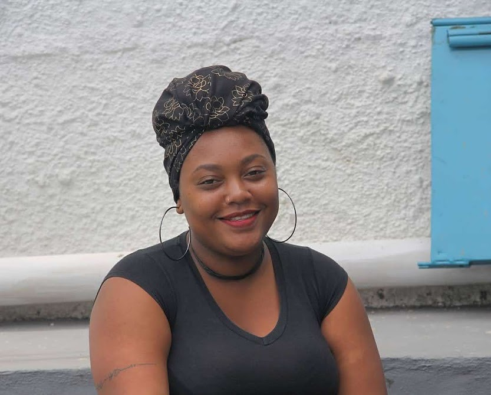

Olá!
Me chamo Dandara
Tenho 20 anos, estudo na área da sociologia digital e agora estou me aventurando na programação. Gosto muito da área da tecnologia e hoje me dedico a pesquisar como as ciências sociais e as novas tecnologias podem contribuir para a afirmação de narrativas que vejam a favela como um espaço de potências. Meu objetivo é hackear o mundo e levar a favela toda junto.